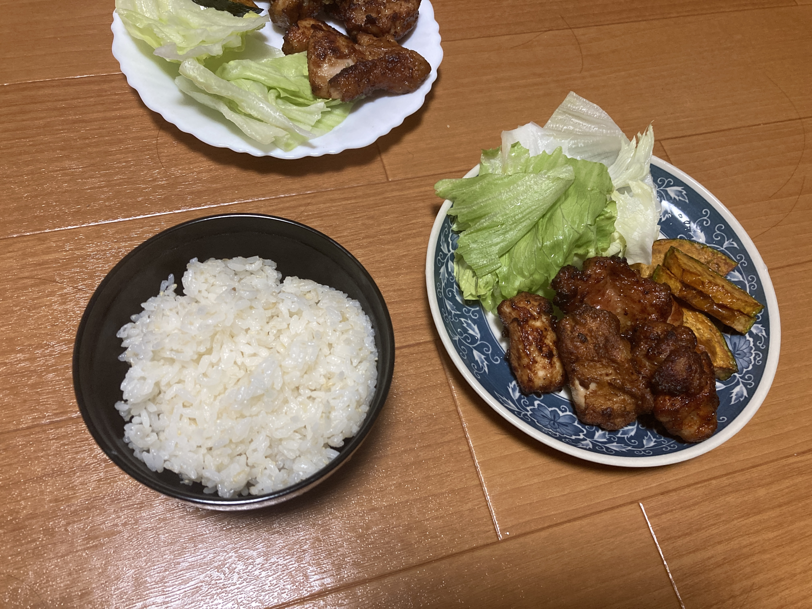
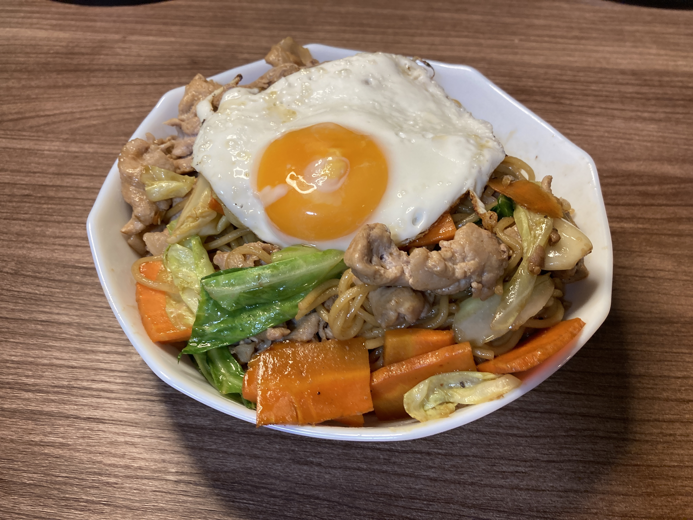
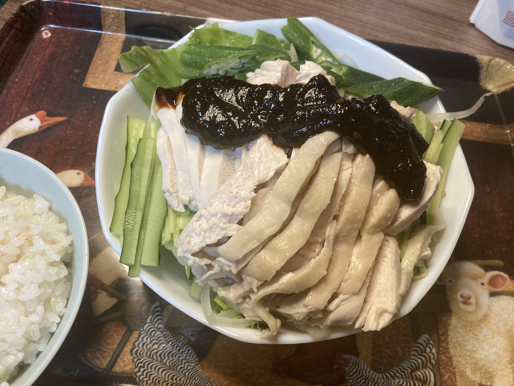

かな飯
自炊メモと日記
おすすめメニュー
自分が食べて美味しかった順
- 西京漬けのホイル焼き
- 白身魚の炊き物
- ジャーマンポテト
いつでも食べに来てもらっていいですよ
６月
６月１３日
昨日の話。冷蔵庫に、鶏肉のカレーカツレツが見つかった。
賞味期限は 4 日前、半額シールが貼られている。
さすがに、鶏肉はまずいか。
でも、明日になるとわずかに異臭を放ちそうだったので、今日中に調理しておくことにした。
大粒のニンニクをスライスして、オリーブオイルでローストする。
ニンニクの香りが立ってきたら、カツレツを並べる。
フライパンを回して油をなじませ、中火で焦げ目をつけたら、裏返して弱火で 30 分ぐらい置いておく。
鶏肉、特にむね肉は、水分が飛ばないようにゆっくり加熱するとおいしい。
タッパにいれて、翌日、オーブンで焼きなおす。
衣とニンニクがカリカリになっておいしい。
4 日切れた鶏肉が食べてはいけない物なのかは、明日わかるでしょう。
６月１２日

イベントの翌日で疲れてるのに、天気はじめじめしたはっきりしない雨で、一日中布団でゴロゴロしていた。
腹が減ってきたので、流石に垂直になった。
キッチンを見ると、煮付けの煮汁がフライパンに入ったままになってた。
片付けろやお前と言われそうだが、生姜の欠片がバラバラ入ってる。
ちょっと舐めてみると、魚の旨味が感じられておいしくなりそうだ。
ということで、このタレを使って生姜焼きを作ってみることにした。
タレを一旦うつわに移し、フライパンに片栗粉を軽く振った豚ロースを並べる。
前回の反省を生かして、豚ロースの縁の油は外しておいた。
焼けてきたら、料理酒をまわしかける。
なんか、肉に酒をかけると固くなるような気がするんだけど、たぶん気のせい。
先ほどの煮汁に、酒、醤油、酢、砂糖、さらにチューブニンニクと追いチューブ生姜を入れてかき混ぜる。ニンニク＆ショウガなんてなんぼ（ry
タレをフライパンに入れると、食欲をそそるニンニク＆ショウガが鼻を刺激する。
肉の油と合わさって、最強のタレが生成されている。
６月１１日

日本橋。よもだそば。特大かき揚げそば半カレーセット。
立ち食いそば屋とは思えないほどツッコミどころが多い。
インドカレー。バターの甘み
けっこう量が多い。
蕎麦屋で印度カレーは初めて食べた。
蕎麦のつゆをちびちびすすりながら、カレーを食べるのが非常に良い。 バター × 醤油 = 優勝 という法則を蕎麦屋に応用する
かき揚げが大きい。 玉ねぎが、かき揚げにしては大きめに切られているが、しっかり甘い。
６月１０日

かつ丼くえよおぉぉぉ 👉👉👉👉
６月９日

ラボの交流会に持ってったジャーマンポテト。

鯛が食べたい！（総統閣下）

食べた（ぶるんぶるん）
６月８日

いつもの。
６月７日

唐揚げァァァァァァ！！！！
６月６日

西京漬けのホイル焼き。
バター × 味噌 = 優勝
トロトロの玉ねぎがめっちゅうまい。
反省：火にかけたまま風呂入ってた（重大インシデント）
６月５日
たらの田楽焼き。
たらを日本酒で軽く炊いた後に、味噌を塗ってオーブンで焼いた。
結論、失敗。酒で味が先に入ってしまい、味噌味が表面だけになっちゃった。
６月４日

たらのバター焼き。
うまい。
付け合わせのにんじんもうまい。
６月３日

６月２日

６月１日

５月
５月３１日
酒（イソプロパノール）でもなく、酒（インディアンスペールエール）でもなく、国産音声字母でもないほうの IPAに行ってきた。

肉！！！
生粋（一瞬、なまいきって読んでしまった）（本当になまいきっていう店名だった）

ふぁいぁ！ 📛📛📛

うますぎて変な声出た。
５月３０日

５月２９日

５月２５日


５月１９日
# えい飯
シジミもとぅるんって頑張ってる。
音 MAD 鑑賞会が開かれた。
あと、「お米食べろ！」の場所特定した。
５月１７日

５月２日
前日に茹でて置いた。70 度付近で甘くなるらしい。

ジャーマンポテト。
4 月
4 月 30 日